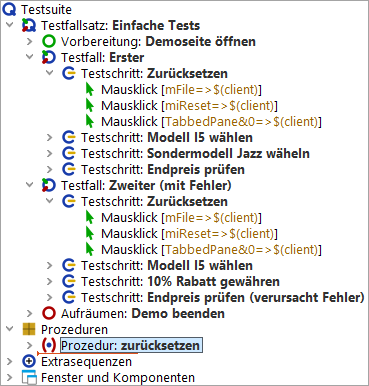
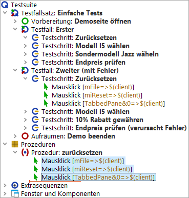
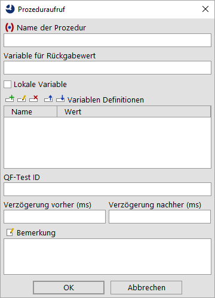
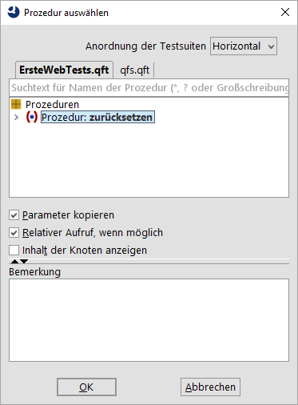
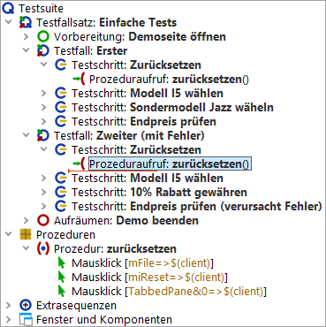

| Version 6.0.3 |
Es gibt mehrere Methoden Prozeduren zu erstellen und Prozeduraufrufe einzufügen. Wir fangen mit der manuellen an, bei der ein (leerer) Prozedurknoten eingefügt wird, in den dann die entsprechenden Aktionen verschoben werden. Danach erstellen wir den zugehörigen Prozeduraufruf.
Es ist gut, wenn man diese grundlegenden Schritte kennt. Es gibt jedoch eine zweite, elegantere Methode Prozeduren zu erstellen, die wir im Anschluss zeigen werden.
Also los, fügen wir eine Prozedur von Hand ein: Wir beginnen mit dem Anlegen des Prozedurknotens, dem wir einen geeigneten Namen geben.
|
|  | ||
|
| Abbildung 12.2: Prozedur Knoten erstellen | ||
Im zweiten Schritt befüllen wir die Prozedur mit den entsprechenden wiederverwendbaren Aktionen.
|
|  | ||
|
| Abbildung 12.3: Prozedur mit Inhalt befüllen | ||
Im dritten Schritt fügen wir einen Prozeduraufruf an Stelle der drei verschobenen Mausklicks ein.
|
|  | ||
|
| Abbildung 12.4: Prozeduraufruf einfügen | ||
|
|  | ||
|
| Abbildung 12.5: Prozedur auswählen | ||
Um wirklich einen Mehrwert durch die Prozedur zu erlangen, müssen wir nun den Inhalt des Testschritts im zweiten Testfall ebenfalls durch einen Aufruf der Prozedur "zurücksetzen" ersetzen.
Sie können dies wie oben beschrieben tun oder Sie führen folgende alternative Schritte zur Erstellung des Prozeduraufrufs aus:
Die Testsuite sollte anschließend wie folgt aussehen:
|
|  | ||
|
| Abbildung 12.6: Testsuite mit Prozedur | ||
Wenn Sie nun die Testfälle ausführen, sollten diese funktionieren wie zuvor. Im Protokoll sind jetzt auch die Prozeduraufrufe und deren Ausführung zu sehen.
| Letzte Änderung: 6.9.2022 Copyright © 2002-2022 Quality First Software GmbH |